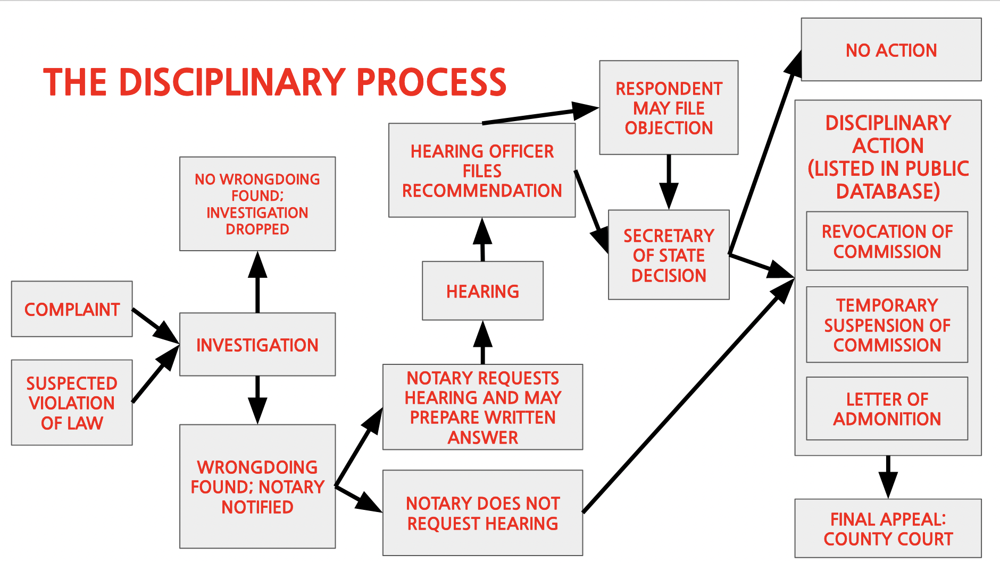

Ohio notary law is really cool. I put together this flowchart depicting the disciplinary process for an Ohio notary public accused of notarial misconduct. It is based on
Ohio Admin. Code § 111:6-1-07
.

Aug. 2022